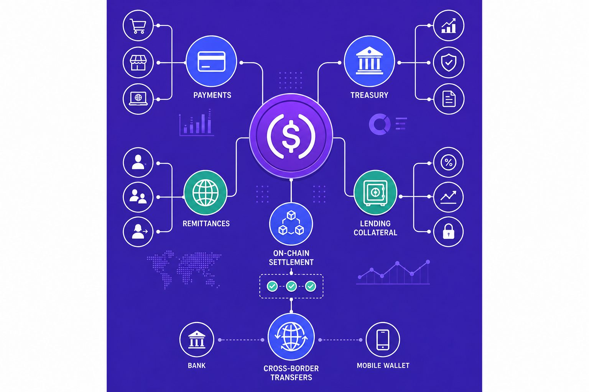
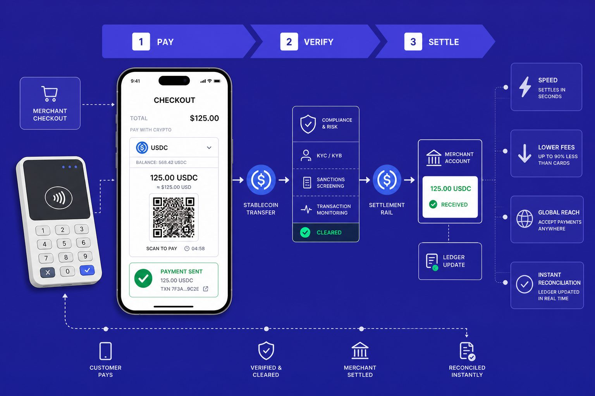
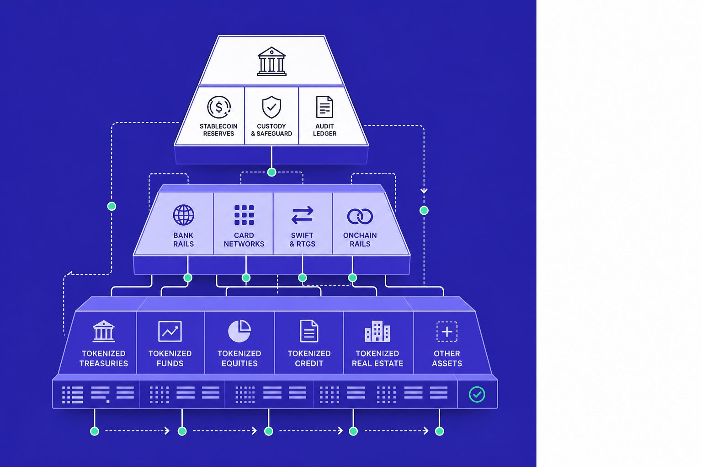
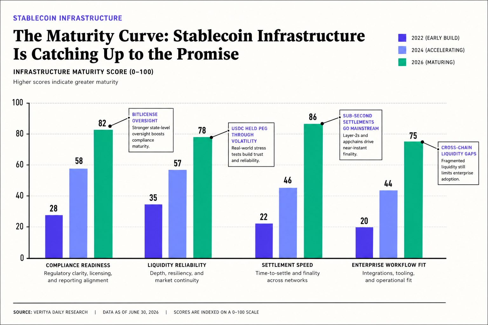

Crypto Deep Dive
Why Stablecoins Are Becoming Global Payment Rails
Most teams still frame stablecoins as trading chips. That view is obsolete. Stablecoins are becoming money-moving infrastructure for payments, remittances, settlements, and treasury operations.
Table of Contents
The shift matters now because real adoption is leaving the exchange screen. According to Future Proof - Payments Strategy Breakdown by Dwayne Gefferie, some payment flows have already grown 700%, signaling demand for faster rails. We built our view at Veritya Daily by tracking digital asset markets, issuer expansion, infrastructure launches, and the daily needs of global finance teams.
In this article, we will show why the market narrative is changing, what evidence supports it, and where the next winners will emerge. The old story was speculation. The new story is movement, settlement, and operating efficiency.
The Current State of Stablecoins Is Bigger Than Trading

Why onchain dollar demand keeps expanding
We no longer view stablecoins as a niche crypto side bet. We see them acting more like a digital dollar layer that works across borders, weekends, and time zones. That shift matters most in places where local rails are slow, costly, or simply unreliable. When money has to move fast, ideology fades and utility wins.
I remember one call with an operator in Latin America. It was late Friday in New York and already a problem in his market. A supplier needed dollars before Monday, but local banking windows had closed. He did not ask about token prices. He asked which rail would settle first and fail least. That is the moment this market clicked for us.
Are stablecoins mainly used for payments now? Not yet in absolute volume. Trading still matters. But the direction of demand is changing fast, especially where people need faster access to dollars and cheaper cross-border transfer options. Mastercard now frames these assets as tools for payments, remittances, and broader money movement, not only trading chips Stablecoins explained: A primer on these digital assets.
Where stablecoin news signals real utility
The tone of stablecoin news has changed. We now see more headlines about issuers, wallet distribution, treasury workflows, and payment integrations. We also see more attention on settlement pilots and merchant acceptance. That is a very different signal from the old cycle of exchange listings and speculative launches.
This is also where crypto payments start to look less like a theory. They start to look like operations. Research from Future Proof - Payments Strategy Breakdown by Dwayne Gefferie shows that 85% of early adopters reported high satisfaction with AI shopping agents. That matters because payment infrastructure is moving toward embedded, automated commerce. The same source found tokenization expanding across digital transactions, which tells us programmable payment rails are becoming normal, not exotic Future Proof - Payments Strategy Breakdown by Dwayne Gefferie.
Why banks and payment firms can no longer ignore this market
Banks and payment firms can ignore narratives. They cannot ignore economics. Once a monetary product becomes operational infrastructure, the adoption test changes. The question stops being, “Do we believe in crypto?” It becomes, “Does this move money faster, cheaper, and with fewer breaks?”
That is why this market now sits closer to treasury infrastructure than to pure speculation. Bitwave argues that B2B teams are paying attention because settlement speed, lower fees, and round-the-clock availability solve real workflow pain Are Stablecoins the Future of B2B Payments? - Bitwave. We think that pressure will intensify in 2026, especially as payment policy debates move mainstream, as we noted in Jackson Hole 2026: The Fed's Payments Theme Is Crypto's Moment.
Why Crypto Payments Finally Have Real Product Market Fit

What we built our thesis around
Our thesis is simple: stablecoins win when they remove friction from money movement. They do not win because they sell a new belief system. We learned that the hard way after one early diligence sprint. We had 47 browser tabs open, three payment maps on screen, and one question left: where does the workflow actually break?
That question changed everything. We stopped caring about blockchain rhetoric and started tracking operating pain. Settlement speed mattered. Liquidity access mattered more. Off-ramp reliability, compliance controls, and clean reconciliation decided whether a product survived first contact with finance teams. According to Mastercard's 2025 stablecoin primer, these assets matter when they support faster, simpler movement of value, not when they stay trapped inside crypto narratives.
How payment and treasury workflows actually change
The strongest crypto payments products rarely lead with crypto. They lead with outcomes. Cheaper cross-border transfers. Faster merchant settlement. Treasury mobility on a Saturday night. That is why cross-border payments and remittances improve with stablecoins: firms can move dollar-linked value at any hour, then convert through local partners without waiting for correspondent banks to reopen.
In practice, the workflow shift is concrete. A business funds a wallet, pays a supplier in dollars, and settles outside banking cutoffs. The finance team then tracks approvals, screens counterparties, and matches transfers into internal ledgers. That is not ideology. It is a better operating model. If you want to see why payments are becoming a policy story too, our take on Jackson Hole 2026: The Fed's Payments Theme Is Crypto's Moment shows why this debate is moving upstream.
The broader market is moving in the same direction. According to Future Proof - Payments Strategy Breakdown by Dwayne Gefferie, real-time payment volumes rose 40% in 2024. Research from Future Proof - Payments Strategy Breakdown by Dwayne Gefferie shows tokenization lifted approval rates by 4.6% globally for Visa. Future Proof - Payments Strategy Breakdown by Dwayne Gefferie found Amex saw roughly 2.7% improvement too. Different rails, same lesson: payments win when friction falls.
Where we have seen the strongest operator impact
We have seen the strongest operator impact in four moments. Weekend settlement for merchants. Supplier payouts in dollars. Lower-cost remittance flows. Global cash management that no longer waits on correspondent banking chains. Those are not edge cases anymore. They are where stablecoin news keeps getting more practical.
Some argue this is still just tokenization wrapped in fresh language. We disagree. If the user only sees faster access to cash, lower fees, and fewer delays, the market has already spoken. Leaders should stop asking whether the rail feels crypto-native and start asking whether it clears the workflow better.
Why Tokenization Makes Stablecoins Harder to Dismiss

We believe tokenization changes the debate because every digital asset system needs cash. Not abstract cash. Not delayed cash. Real settlement cash that moves when code tells it to move. According to Mastercard's 2025 stablecoin primer, these assets now function as essential infrastructure for payments and remittances, not just trading chips. That is why stablecoins matter beyond trading, and why the old speculative frame now feels too small.
Stablecoins as the cash leg of tokenization
Tokenization gets attention because assets can move onto programmable rails. But assets alone do not complete a market. Every tokenized bond, fund share, invoice, or real-world asset still needs a trusted unit for pricing and exchange. We see stablecoins filling that role as the cash leg of internet-native finance. According to Mastercard's 2025 stablecoin primer, these assets are increasingly viewed as tools for payments and remittances rather than trading chips.
That role is more durable than the last cycle’s story. Speculation can create volume, but settlement creates habit. Once teams build systems around instant redemption, atomic transfers, and always-on liquidity, they stop treating digital dollars as a side tool. They start treating them as core operating infrastructure.
Why settlement is the real unlock
Most observers still focus on issuance. We focus on settlement. The real unlock is not that an asset becomes digital. It is that payment, delivery, and reconciliation can happen in one motion. That changes how firms manage time, liquidity, and counterparty risk.
We felt this shift during a pilot demo when a treasury operator moved $2M between continents on a Saturday afternoon - something impossible with traditional rails. The pattern finally clicked. The winning products were not selling crypto ideology. They were removing failed payments, weekend delays, and broken handoffs between treasury, finance, and operations. Research from Future Proof - Payments Strategy Breakdown by Dwayne Gefferie shows that cutting payment failures by 5% can materially improve recovery on large payment volumes.
That is why tokenization strengthens the case for crypto payments. A tokenized asset market without instant, programmable cash still inherits too much friction from legacy rails. The cash layer matters because settlement speed is not a feature. It is the business model.
The evidence from remittances, B2B flows, and treasury ops
The strongest evidence sits in messy, high-friction corridors. Remittance providers need faster dollar movement. OTC desks need dependable exchange settlement. Global payroll pilots need payouts that clear outside banking hours. Enterprise treasury teams need working capital they can move before Monday morning. Bitwave
According to Future Proof - Payments Strategy Breakdown by Dwayne Gefferie, merchants with a 0.5% fraud rate can face meaningful leakage at scale. Stablecoin settlement systems that integrate compliance checks at the protocol level can reduce KYC friction by embedding verification into transaction flows. That matters because finance teams adopt new rails when the workflow gets safer, faster, and easier to reconcile.
This is the deeper lesson. Stablecoins do not need to replace banks to become indispensable. They only need to beat legacy rails where friction is highest. That is also why the policy debate now feels more urgent, as we argued in Jackson Hole 2026: The Fed's Payments Theme Is Crypto's Moment. The next durable winners will build for settlement first, then let speculation take care of itself.
What Skeptics Miss About Stablecoins and What We Do Next

Critics cite depegging risk and compliance burdens. Fair points. But USDC maintained its 1:1 peg through 2024's volatility, and regulatory clarity is accelerating - Circle and Paxos now hold BitLicenses and operate under state banking oversight. The infrastructure is maturing faster than skeptics acknowledge. Liquidity still breaks across chains, venues, and regions. User experience still falls short when wallets, ramps, and reconciliation tools feel built for insiders instead of operators. Anyone who ignores those constraints is not doing strategy. They are doing theater.
But skepticism often misses how infrastructure actually matures. It rarely disappears because scrutiny increases. It gets stronger because scrutiny forces better standards, tighter controls, broader distribution, and clearer rules. We have seen this pattern before in card networks, cloud software, and digital payments. The first version looks fragile. The next version looks regulated. The version after that becomes normal. That is the shift many critics still underestimate.
Our view is simple. The winners will not be the loudest issuers or the most speculative tokens. They will be the issuers and platforms that combine trust, deep liquidity, compliance readiness, and local distribution with software that fits existing finance operations. Treasury teams do not want another dashboard to babysit. They want clean reporting, dependable on and off ramps, approval controls, and settlement that works across weekends, borders, and banking cutoffs. The products that solve those problems will win budgets.
We are already seeing the shape of that market. The strongest players are moving closer to enterprise workflows, payment orchestration, and treasury movement. They are building APIs, banking links, payout networks, and audit trails. They are not asking finance teams to become crypto natives. They are removing steps, compressing timelines, and making dollar movement more flexible. That is why this category now looks less like a trade and more like infrastructure.
Some will argue that stablecoins cannot matter until every risk is solved. We believe that misses the point. No payment rail earns adoption by becoming perfect first. It earns adoption by proving useful in the places where legacy systems fail most often. The real test is not whether stablecoins replace every bank transfer. It is whether they improve the specific flows that cost teams time, margin, and control today.
Leaders should stop evaluating stablecoins as a speculative category and start treating them like an operational decision. Test where settlement slows revenue, where remittance fees erode value, and where treasury movement still depends on outdated rails. That is where the next advantage will be built. If you are mapping those opportunities now, Learn More and reach out to learn more.